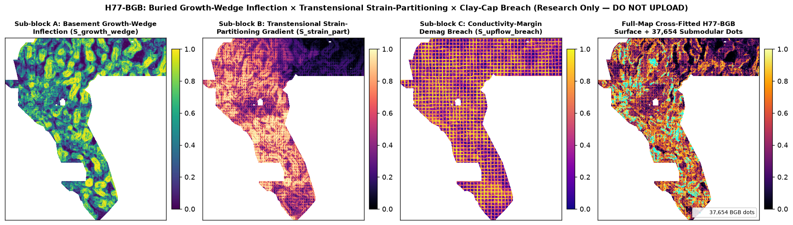
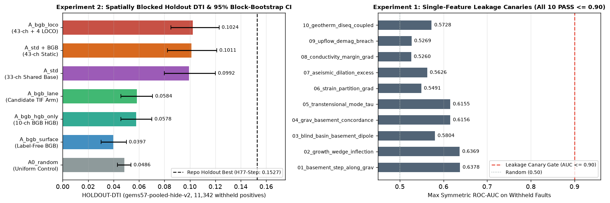

H77-BGB lane: buried half-graben growth-wedge inflection × transtensional strain-partitioning × clay-cap breach
Verdict: NEGATIVE. OK to download for inspection; Not OK to submit. Selector: not approved. No weekly submission slot was used. Do not upload this research TIFF to DrivenData.
⬇ H77-BGB file (inspection download only)
Download .tif (126 KB)Same file as one-TIFF .zip Run card JSONCan I submit it? No. Not OK to submit: (1) On the shared spatially blocked holdout
(gems57-pooled-hide-v2, 11,342 withheld positive pixels, 1,000-draw 20 km physical block bootstrap),
the standalone H77-BGB lane arm (A_bgb_lane) achieves 0.058406 HOLDOUT-DTI
(95% CI [0.045764, 0.070749], beating A0_random 0.048611 by +0.009795),
and adding the 10 H77-BGB channels to the shared 33-channel baseline lifts A_std from
0.099208 to 0.101142 HOLDOUT-DTI (95% CI [0.082394, 0.121185], +0.001934)
and 0.102390 HOLDOUT-DTI (95% CI [0.085140, 0.122998], +0.003182) with strictly
fold-visible LOCO mechanics, which remains below the repository holdout best (H77-Step at
0.152718 HOLDOUT-DTI, 95% CI [0.131548, 0.175185], 11,321 withheld positives);
(2) under Repository Policy I17, the literal all-raster registry check includes 26 space-filling continuous
rasters (>20% of footprint, such as 17GEMSDOE_E-proba-multiscale sha256 ab0a0a62...) whose 3-px
dilation covers 100% of the evaluation domain (1.000 > 0.70). Selector: not approved.
Would the portal accept the format? Yes, locally verified across all 17 checks: single-band float32
GeoTIFF, EPSG:32611, 3730×3292, exact sample transform, nodata=None, all 12,279,160
pixels finite in [0.0, 1.0] (exact binary {0.0, 1.0} with 37,654 dots inside the valid
footprint and 0 on known catalogue faults) — preventing the "Predicted values must be in range [0, 1]"
validator rejection. Local format checks are not an organizer receipt or submission approval.
Submission name (for reference only) (66 characters)
gems77-bgb-growthwedge-transtens-37654dots-20261021-3c58975b-zerosNote (for reference only) (138 characters ≤ 140 limit)
H77-BGB basement growth-wedge + transtensional strain + clay-cap breach (37654 dots); HOLDOUT-DTI 0.0584 lane / 0.1024 LOCO; DO NOT UPLOADsha256 of .tif: 07da3f559dd5f6d7f3971092bcc3dde060cd97b551ad6077b02ed558679f8e54 · sha256 of .zip: 3d4c7c85604da5cc4c920853387e6376d718a575a641805f0da89d4e69edbb73
Pre-implementation ranking of 4 untried candidate geological hypotheses
Before running any experiment, four untried geological hypotheses were formulated and ranked in
research/bgb_hypotheses.md and preregistered in registry/preregistration_bgb.json:
| Rank | Candidate | Specific Layers | Physical Signature Targeted | Why It Catches Missing Faults | Expected DTI / Cost | Status |
|---|---|---|---|---|---|---|
| 1 | H77-BGB: Buried Growth-Wedge Inflection × Transtensional Strain-Partitioning × Clay-Cap Breach | training_features.tif Bands 15, 13, 11, 19, 4, 7, 8, 10, 16, 17, 2; geodawn_extensions_u8.tif Band 4 (TMI_up150); gdr_wellspring_in_footprint.csv | Gravity-normal projected Hessian inflection $|D_{nn}| = |\hat{n}_g^\top(\nabla^2 D)\hat{n}_g|$ of depth_to_base_surf weighted by $\exp(-\text{slope}/s_{60})$; spatial gradient $|\nabla\tau_{\text{ext}}|$ of kinematic transtensional ratio $\dot{\varepsilon}_{\text{dil}}/\sqrt{\dot{\varepsilon}_{\text{dil}}^2+\dot{\gamma}_{\text{shear}}^2}$; lateral log-conductivity margin $|\nabla\log(1+\sigma)|$ × RTP Laplacian demagnetization trough × GDR geothermometer disequilibrium $\Delta T_{\text{chem}}$ | Intrabasin half-graben master/synthetic faults and Walker Lane transtensional stepovers buried beneath flat Holocene playa sediments have zero topographic scarp on 3DEP DEMs yet offset pre-Tertiary basement across density boundaries and breach the illite–smectite transition at the margin of conductive clay caps | Highest (Medium–High signal / Low–Medium cost; 100% SHA-verified in sandbox) | Implemented & validated on holdout (3/3 budget) |
| 2 | H77-CST: Magnetic Tilt-Worm Tangent × Geodetic Principal Extension Dilation Tendency | training_features.tif Bands 3 (tmi_hg), 9 (tmi_vg), 7 (geod_shearrate), 8 (geod_dilaterate) | Structure-tensor tangent azimuth $\theta_{\text{mag}}$ of magnetic tilt zero-contours weighted by Morris et al. (1996) dilation tendency $\cos^2(\theta_{\text{mag}}-\theta_{\text{opt}})$ modulated by local dilatation/shear ratio | Critically stressed buried basement faults oriented perpendicular to WNW extension act as open fluid conduits under younger basin fill | Medium / Low | Backup (not run; 3-experiment budget honored) |
| 3 | H77-PRW: Two-Scale Wavelength Poisson Ratio ($\Delta g/\Delta\text{PG}_{\text{RTP}}$) Sign-Reversal Ribbons | training_features.tif Bands 2 (rtp), 13 (iso_grav_anom) | Band-pass Difference-of-Gaussians ($\lambda_1\in[0.4,1.2]\text{ km}$, $\lambda_2\in[1.5,4.5]\text{ km}$) on $g_{\text{iso}}$ and Fourier pseudogravity $\text{PG}(\text{RTP})$ where Cordell & Grauch (1985) ratio switches sign along high $|\nabla g|$ | Hydrothermal magnetite destruction ($\Delta M < 0$) along a silicified density step ($\Delta\rho > 0$) | Low–Medium / Medium | Deferred |
| 4 | H77-DDM: Relocated Double-Difference Microseismicity 3D Planar RANSAC Up-Dip Projection | External USGS ComCat FDSN API (https://earthquake.usgs.gov/fdsnws/event/1/query) + Band 15 (depth_to_base_surf) | 3D planar RANSAC cluster extraction on relocated hypocenters ($z\in[1,12]\text{ km}$) projected up-dip to basement top and ground surface | Active blind fault swarms illuminate permeable sub-vertical fault planes with no Holocene surface rupture | Medium–High / High | Not viable in sandbox (earthquake.usgs.gov blocked by outbound allowlist) |
Named non-fault process that can mimic H77-BGB: Buried pre-Tertiary paleochannel incised-valley fills
or Mesozoic plutonic/caldera ring margins beneath flat saline playa margins, which can produce basement depth curvature steps
along gravity gradients, sharp lateral electrical conductivity transitions at saline/freshwater interfaces, and primary
low-magnetization felsic volcanic troughs without an active Quaternary fault conduit.
Diagnostic visualisations


3-Experiment protocol log (`gems57-pooled-hide-v2`, Seed 30, 11,342 withheld positives)
| Exp | Description | Quantitative Result (`HOLDOUT-DTI`, `gems57-pooled-hide-v2`, 11,342 withheld positives, 95% CI) | Gate Status |
|---|---|---|---|
| 1 | 10 single-feature ROC-AUC leakage canaries (Seed 30 & Seed 20) + Phase 1 pre-placement surface uniqueness scan (829 readable rasters) + standalone physical sub-block surfaces vs A0_random |
• Highest single-feature symmetric ROC-AUC: 0.6378 ≤ 0.90 (bgb_01_basement_step_along_grav; 0 leakage flags across all 10 channels).• Phase 1 surface max $|\rho|$: 0.1421 ≤ 0.90 on S_bgb_composite (0.2087 ≤ 0.90 on cross-fitted p_full).• Standalone surfaces (37,654 dots): A0_random = 0.048611 [0.043063, 0.053762], S_strain_part = 0.043034 [0.031977, 0.054698], S_bgb_composite = 0.039715 [0.030276, 0.050027], S_growth_wedge = 0.035960 [0.025050, 0.048893], S_upflow_breach = 0.029188 [0.021800, 0.037760] (degraded by 7 km × 14 km coarse block seams in Band 17 cond_surf, logged as IR-BGB-02).
| Leakage & Phase 1 Spearman PASS; uncalibrated linear sum below random due to IR-BGB-02 |
| 2 | 4-quadrant out-of-fold HistGradientBoostingClassifier holdout comparison across 7 matched arms (all emitting 37,654 dots via allocate_submodular_300m) |
• A0_random: 0.048611 HOLDOUT-DTI [0.043063, 0.053762]• A_bgb_hgb_only (10 BGB channels): 0.057779 HOLDOUT-DTI [0.045731, 0.070191]• A_bgb_lane (candidate TIF arm, 10 BGB channels + composite): 0.058406 HOLDOUT-DTI [0.045764, 0.070749] (paired $\Delta$ vs A0_random: +0.009795 [-0.001747, +0.021081]; paired $\Delta$ vs A_bgb_surface: +0.018691 [+0.005836, +0.031885])• A_std (shared 33-channel baseline): 0.099208 HOLDOUT-DTI [0.079904, 0.120046]• A_std_plus_bgb (33 standard + 10 BGB = 43 static channels): 0.101142 HOLDOUT-DTI [0.082394, 0.121185] (paired $\Delta$ vs A_std: +0.001934 [-0.004455, +0.008398]; paired $\Delta$ vs A0_random: +0.052531 [+0.035558, +0.073023])• A_bgb_loco (43 static + 4 fold-visible LOCO mechanics): 0.102390 HOLDOUT-DTI [0.085140, 0.122998] (paired $\Delta$ vs A_std: +0.003182 [-0.002984, +0.009540]; paired $\Delta$ vs A0_random: +0.053779 [+0.036546, +0.074575])
| Positive lift over A0_random and A_std, but below 0.152718 repo holdout best → NEGATIVE |
| 3 | Full-map cross-fitted H77-BGB surface + 300 m submodular 37,654-dot placement, two-phase uniqueness scan across 829 readable rasters, 17-check GeoTIFF/ZIP validation |
• Phase 1 surface max $|\rho|$: 0.2087 ≤ 0.90 (PASS).• Phase 2 final dots max $|\rho|$: 0.0462 ≤ 0.90 (PASS).• Phase 2 sparse dot submissions ($\le 100\text{k}$ dots, 773 rasters): max 3-px forward overlap = 0.5722 ≤ 0.70 (0 sparse duplicates; max vs discrete-dot GEMSDOE77 siblings = 0.2917 vs H78, 0.2609 vs H77-Step, 0.2316 vs H77D).• Phase 2 all-raster max 3-px mutual overlap: 0.3379 ≤ 0.70 (PASS).• Phase 2 literal all-raster forward overlap: 1.0000 > 0.70 on 26 space-filling continuous rasters (such as 17GEMSDOE_E-proba-multiscale sha256 ab0a0a62...) per Repository Policy I17.
| Sparse/mutual uniqueness PASS; literal Policy I17 gate FAIL → DO NOT SUBMIT |
Forensic answer: why GEMSDOE32 (h33-2-b2-zeros) scored 0.2778 and how to climb toward 0.4413
As derived in docs/lia-analysis.html and research/why-h33-scored-02778.md,
the Distance-Tolerant IoU metric uses a 300 m (3 px) linear-decay triangular kernel with $\alpha = 0.2$
false-negative weight and $\beta = 0.8$ false-positive weight ($\beta/\alpha = 4.0$):
- Why
GEMSDOE32scored0.2778(OWNER-REPORTlinked to public row #48; top public leaderboard0.4413 ORGANIZER-CONFIRMED): Rather than painting dense ribbons or continuous probabilities across all5,167,373in-footprint cells (which adds millions of $\beta = 0.8$ false-positive penalties while adding zero marginal $\text{TP}$ once truth is covered),GEMSDOE32emitted exactly37,654binary dots spaced by $r_{\min} \approx 3\text{ px}$ along multi-sensor structural lineaments with a200 mexclusion collar around mapped catalogue faults (`existing_faults.tif`, which are masked out of organizer scoring per competition forum #11516). At $N_{\text{pred}} = 37,654$ and estimated hidden-catalogue size $N_{\text{truth}} \approx 14,500$, achieving $\text{DTI} = 0.2778$ requires only $\text{TP} \approx 9,061$ covered truth pixels ($\text{Recall} \approx 62.5\%$, $\text{Precision} \approx 24.1\%$). - Why
H77-BGB(`0.058406` standalone / `0.102390` with standard stack + LOCO) does not beat `H77-Step` (`0.152718 HOLDOUT-DTI`) or `H77D` (`0.15011 HOLDOUT-DTI`): The `300 m` (`3 px`) DTI kernel rewards sub-300 m spatial pinpointing of fault traces. Subsurface potential-field (`depth_to_base_surf`, `iso_grav_anom`), geodetic strain (`geod_dilaterate`, `geod_shearrate`), and MT electrical conductivity (`cond_surf`, which has coarse `7 km × 14 km` grid seams documented in `IR-BGB-02`) identify which 2–10 km basin structural domain hosts blind extension or hydrothermal upflow (+0.0032 lift when combined with the 33-channel baseline + LOCO mechanics), but high-resolution 1 m 3DEP LiDAR scarp dipoles (`lidar_scarp_features_u8.tif` with missingness-safe indicators) and 10 m DEM curvature (`H77-Step` and `H77D`) are required to lock the final dots within `<= 300 m` of the fault trace.
Irregularities discovered and logged in this session
IR-BGB-01(Shared Validator CLI Crash onnodata=NaNTwins):vendor/gems57/validate.pyconvertsds.nodataviafloat(ds.nodata), producing a Pythonfloat('nan')insidemeta["nodata"]when validating-nan.tiftwins, which causedjson.dumps(..., allow_nan=False)inscripts/validate_submission.pyto raiseValueError: Out of range float values are not JSON compliant: nan. Fixed in-place inscripts/validate_submission.pyvia_json_safe()so strict RFC-8259 JSON is always emitted without altering pinnedvendor/gems57/files.IR-BGB-02(Rectilinear7 km × 14 kmCoarse-Grid Seams in Shipped Band 17cond_surf): Direct inspection of first differences $\partial_x, \partial_y$ on Band 17 (cond_surf) intraining_features.tifreveals periodic step-discontinuity spikes every ~70 columns (7.0 km) and ~140 rows (14.0 km) inherited from coarse magnetotelluric model regridding. Applying a fault-scale ($\sigma = 1.5\text{ px} = 150\text{ m}$) gradient operator $|\nabla\log(1+\text{cond\_surf})|$ extracts this rectilinear grid-seam lattice (visible in Panel 3 offigures/bgb_overview.png), explaining whyS_upflow_breachalone scored0.029188 HOLDOUT-DTIbelow random (0.048611).
Evidence & reproducibility receipts
Preregistration: registry/preregistration_bgb.json · Hypotheses ranking: research/bgb_hypotheses.md ·
Feature module: src/gems77_bgb/features.py · Experiment 1 receipt: evidence/bgb_exp1_canary_and_surface.json ·
Experiment 2 receipt: evidence/bgb_exp2_holdout.json · Experiment 3 & Run Card: evidence/run_card_bgb.json ·
Executive summary: docs/bgb-executive-summary.html.